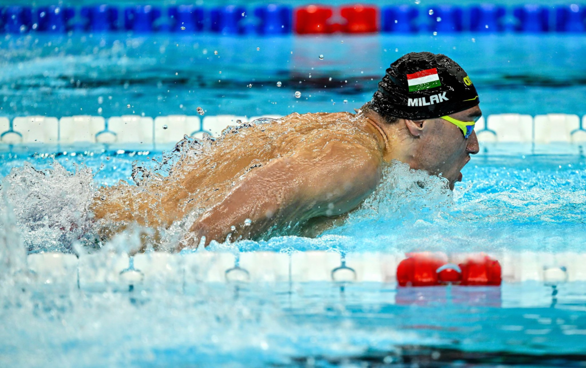
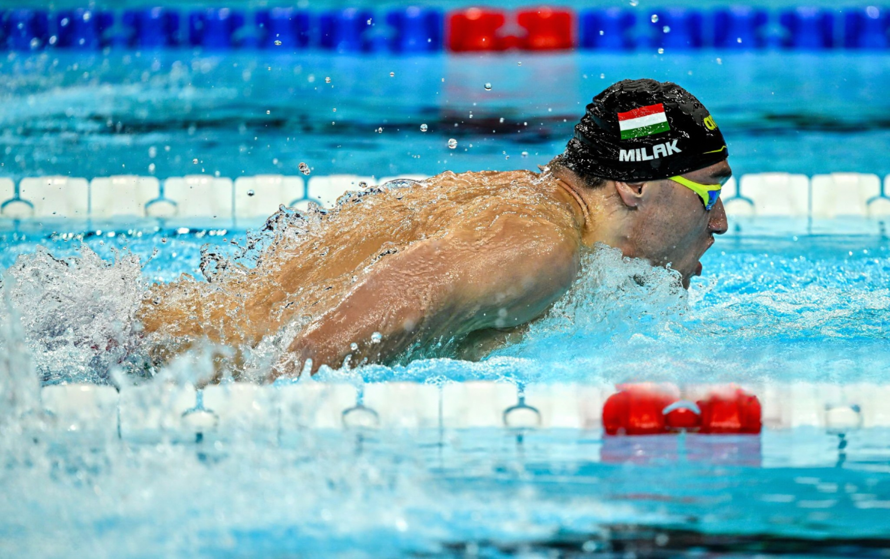

Mariposa
El estilo de natación mariposa es uno de los más exigentes y espectaculares. Se caracteriza por el movimiento simultáneo de ambos brazos hacia adelante y hacia atrás por encima del agua, acompañado de una patada ondulante conocida como "patada de delfín". Este estilo requiere una gran coordinación y fuerza, ya que el nadador debe mantener un ritmo constante y una técnica precisa para avanzar eficientemente.
El movimiento del cuerpo en el estilo mariposa es ondulante, similar al de un delfín, lo que ayuda a generar impulso y mantener la velocidad. La respiración se realiza levantando la cabeza hacia adelante durante la fase de recuperación de los brazos. Aunque es físicamente demandante, con práctica y técnica adecuada, puede ser dominado y disfrutado por nadadores de todos los niveles.
En la imágen de la izquierda podemos ver al estadounidense Caeleb Dressel, poseedor del récord del mundo de 50m y 100m mariposa. A la derecha se encuentra el húngaro Kristóf Milak, el nadador con mayor dominancia en los 200m mariposa de la histora; sin embargo el récord olímpico (no el mundial) se lo arrebató recientemente Leon Marchand.
 

Espalda
El estilo de natación espalda se caracteriza por nadar de espaldas al agua, con un movimiento alterno de brazos y piernas. Los brazos se mueven en un movimiento circular hacia atrás, entrando al agua con el meñique primero, mientras que las piernas realizan una patada similar a la del estilo libre, conocida como “patada de flutter”.
Una de las ventajas de este estilo es que la cara permanece fuera del agua, lo que facilita la respiración continua y reduce la sensación de claustrofobia que algunos nadadores pueden experimentar en otros estilos. Sin embargo, nadar de espaldas puede ser un desafío en términos de orientación, ya que el nadador no puede ver hacia dónde se dirige y debe confiar en las señales visuales del techo o las paredes de la piscina para mantenerse en línea recta.
El estilo espalda es ideal para mejorar la flexibilidad de los hombros y la fuerza de la espalda, y es una excelente opción para aquellos que buscan un entrenamiento completo del cuerpo sin la presión de mantener la cabeza bajo el agua.
En la imágen de la derecha se encuentra la australiana Kaylee McKeown, poseedora de los récords de 50m y 200m espalda. A la derecha Hugo González, el mejor nadador español en la actualidad y campeón del mundo en los 200m espalda en los últimos campeonatos del mundo en Fukuoka.

Braza
El estilo de natación braza se caracteriza por un movimiento simultáneo de los brazos y las piernas en un patrón circular. Los brazos se extienden hacia adelante y se abren hacia los lados, mientras que las piernas realizan una patada de rana, doblándose y extendiéndose hacia afuera. Este estilo es conocido por su ritmo más lento y su técnica precisa, lo que lo hace ideal para nadadores principiantes y avanzados.
La respiración se realiza levantando la cabeza hacia adelante durante la fase de recuperación de los brazos. La braza es un estilo que requiere coordinación y fuerza, especialmente en las piernas, y es excelente para mejorar la resistencia y la técnica general de natación.
A la izquierda está el inglés Adam Peaty, el indiscutible mejor nadador de la historia de braza, además de haber estado alrededor de una década con los mejores tiempos de braza en todas las pruebas, posee las 20 mejores marcas de la historia en 100m braza.
El nadador de la derecha no se queda corto ya que el francés Leon Marchand a sus 22 años a conseguido 4 medallas de oro en las Olimpiadas de París 2024 nadando braza, mariposa y estílos. Además ya ha superado el último récord del mundo que dejó Michael Phelps en los 400m estílos.


Crol
El estilo de natación crol, también conocido como estilo libre, es el más rápido y popular. Se caracteriza por un movimiento alternado de los brazos y una patada constante de las piernas. Los brazos se mueven en un patrón circular, entrando al agua con la mano primero y empujando hacia atrás para generar propulsión.
La patada de crol, conocida como “patada de flutter”, consiste en un movimiento alternado de las piernas desde la cadera, con los pies relajados y los dedos apuntando hacia adentro. La respiración se realiza girando la cabeza hacia un lado durante la fase de recuperación del brazo, permitiendo una inhalación rápida antes de volver a sumergir la cara en el agua.
Este estilo es eficiente y permite mantener una velocidad constante, lo que lo convierte en la elección favorita para muchas competiciones de natación.
A la izquierda está la veterana sueca Sarah Sjöström, poseedora de 6 medallas olímpicas en 5 Olimpiadas distintas, 25 en mundiales desde 2009 hasta la actualidad, además de 27 en Europeos. También ostenta 3 récords mundiales en 50m y 100m libre y 50m mariposa.
A la derecha otra nadadora con un historial apabullante, para muchos la mejor nadadora de la historia, la estadounidense Katie Ledecky. Posee 14 medallas olímpicas, 9 de ellas oros, participó con 15 años en sus primeras olimpiadas y desde entonces no ha sido ganada nunca en los 800m y 1500m libres, también tiene 26 medallas mundiales y 21 son oros. Evidentemente obstenta los récords de 800m y 1500m libres.